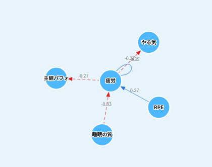
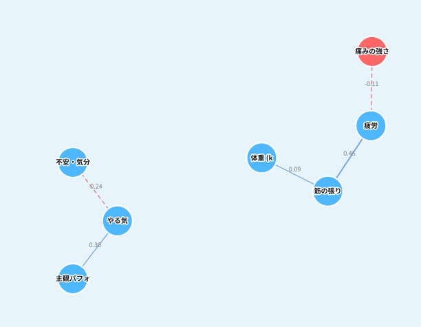

GPS・コンディション報告・メディカル記録——クラブがすでに持っているデータを分析し、チーム・選手固有のモデルと示唆をつくります。 とる指標の相談からデータ整理・現場実装まで、データ周りはまるごとお任せください。
GPS・コンディション・スケジュール・既往歴を統合し、 単独では正常な要因の「重なり」から、選手ごとのリスクをAIが先読みします。
1つの現象=「ケガ」を、多面的なデータで予測。チームのデータで個別に構築・継続更新
| 指標 | 従来 ── ACWR（単一指標） | Odonata |
|---|---|---|
| Precision 「危険」と予測した日のうち、実際に傷害が発生した割合 | 約5% | 約70% |
| Recall 発生した傷害のうち事前に「危険」と予測できていた割合 | 約20% | 約20% |
Precision は 約5%（ACWR）→ 約70%（Odonata）。一方 Recall はいずれも約20%で同等です。すべての傷害を捉えられるわけではありません。
※ 従来手法は、単一の負荷指標（急性慢性負荷比＝ACWR）による監視です。
※ 傷害の完全な予防を保証するものではなく、現場の意思決定支援を目的としています。
※ 予測対象は筋肉系・非接触靭帯系・オーバーユース系の傷害です（接触による打撲・骨折などは対象外）。
※ 筑波大学蹴球部 2022–2025年データでの検証値であり、チーム・データ環境により結果は異なります。
コンディション・GPS・試合スタッツなどを統合し、 「どの指標が、どの指標に、どう影響しているか」を図として可視化します。
指標どうしのつながりを網の目として可視化。1つの指標では見えない、選手というシステムの全体像を解釈できます。

この例では、睡眠の質が下がると翌日の疲労が大きく跳ね上がる構造（-0.83）が見えます。練習の運動強度（RPE）も、翌日の疲労を押し上げています。
「自分は睡眠が崩れると疲労を持ち越すタイプ」と自覚できる。まず夜のルーティンを整える。
連戦時は睡眠の確保を最優先に。朝の疲労報告から、当日の負荷を先回りして調整できる。

この例では、疲労と筋の張りが同じ日に連動（0.45）し、不安・気分の落ち込みがやる気を下げる（-0.24）構造が見えます。
張りが強い日は疲労のサイン。セルフケアとスタッフへの申告の目安になる。
気分の揺れがパフォーマンスに波及する選手には、声かけ・面談を優先する判断ができる。
※ 図はデモ環境の表示例です。読み取れる構造は選手・チームごとに異なります。
主観コンディション・試合・メディカルのデータから初期分析を開始できます。GPS導入前のチームもご相談ください。
負荷・疲労の蓄積が、試合中のどのプレーに出るのかを定量化します。
負荷・疲労が重なった週は、デュエル勝率が平均約16pt低下します。ただし低下の幅は選手によって大きく異なるため、チーム平均ではなく選手個別に推定します。
「誰を、どの週に、どれだけ使うか」の判断材料として、起用と負荷設計の両方に使えます。
※ 筑波大学蹴球部 GPS約5.6万日分＋日次コンディションの階層ベイズモデルによる推定値です。チーム・データ環境により結果は異なります。
分析例①の傷害リスク予測を例に、分析への投資が守る価値を試算します。
傷害による選手の非稼働は、プロクラブでは選手人件費の約10%※1に相当すると試算されます。 Odonataの傷害予測がカバーする範囲では、年間最大1,000万円相当※2の稼働価値を守れる可能性があります。 主力の離脱を1件防ぐことの意味は、順位にも、選手のキャリアにも直結します。
※ J1クラブ3シーズンの傷害調査から非稼働率を約10%と仮置きし、トップチーム選手給与相当額5億円 × 10% × Recall 20% × 介入成功率100% で試算した機会損失の概算です。会計上の直接的な利益・費用削減を示すものではありません。
※ チームの人件費規模・傷害発生状況・モデルの予測対象範囲により結果は異なります。詳細な算定条件は商談時にご説明します。
※ 出典：山本純「プロサッカーチームにおける3年間の傷害調査」Football Science Vol.11, 2013 ／ Howden “Men’s European Football Injury Index 2024/25”
入口は2つ。どちらからでも、単発の分析から継続伴走まで広げられます。
まずお持ちのデータを預かり、分析レポートとしてお返しします。データの価値を確かめてから、次を決められます。
データプラットフォームで記録の仕組みから整備。貯まったデータに、分析・予測を重ねていきます。
現場のニーズを伺い、適切な分析アプローチを選択（オンライン可）。
散らばったデータの整理から、とる指標の設計・収集まで。
複雑系アプローチを軸に分析し、現場の言葉で読み合わせ。
伴走・アプリ搭載・プラットフォーム導入で、日々の意思決定へ。
STEP 1〜4 まで、データ周りはまるごとお任せいただけます